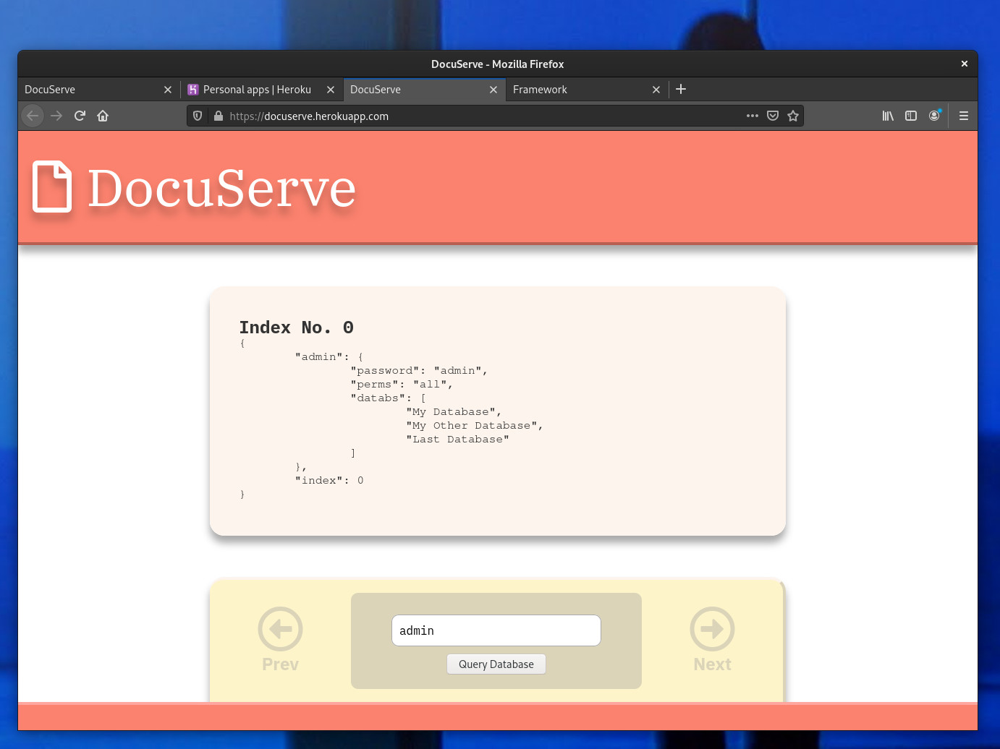

<section>
    <div class="rows"><h2>DocuServe</h2>
        <div class="content">
            <div class="gallery">
                
            </div>
            <h3>Description</h3>
            <p>
                DocuServe is a non-relational JSON database system that will feature a REST API with typical CRUD operations. User authentication will be handled through multipart form data using the Express 'multer' module.
            </p>
            <h4>Try it: <a href="https://docuserve.herokuapp.com/" target="_blank">here</a></h4>
            <p><em>The current database has only two entries, storing user data.  Search "admin" or "guest" in the query field to retrieve either entry, and use the arrow buttons to navigate from previous to next entry.</em></p>

            <h3>GitHub Repository</h3>
            <a href="https://github.com/djweaver-dev/docuserve" target="_blank">https://github.com/djweaver-dev/docuserve</a>

        </div>
    </div>
</section>